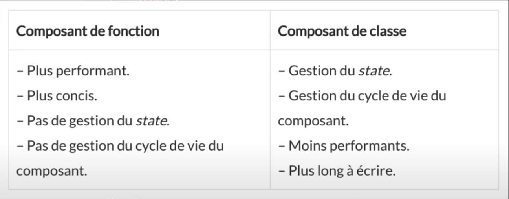
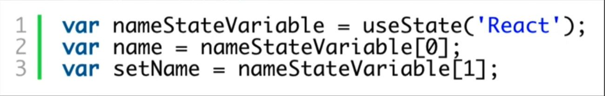
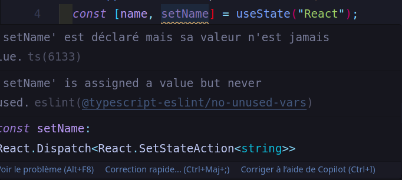

Les types de composants
Il existe deux types de composants en React : les composants fonctionnels et les composants de classe.
Utiliser l'un ou l'autre applique de grandes différences pour l'application créée.
Les limites de composants de fonctions
Les composants généralement déclarés avec des classes sont plus longs à écrire que les composants fonctionnels car ils proposent deux fonctionnalités supplémentaires.
-
Les composants de classe permettent de gérer un état, le state.
Qu'est-ce qu'un state ?
Le state est un objet JavaScript qui contient des données relatives à un composant et directement synchronisé avec le DOM virtuel et écrit en JSX.
- Les composants déclarés avec des classes permettent d'implémenter un cycle de vie pour les composants, comme par exemple sa création ou sa suppression du DOM virtuel. très utilise pour implémenter un comportement spécifique à nos composants.
Pourquoi alors ne pas tout le temps utiliser des composants de classe, puisqu'ils sont plus complets, et offrent davantage de fonctionnalistés ?
Les composants de fonction ont aussi une utilité.
React recommande les utiliser le plus possible car ils sont dit "pur". C'est-à-dire, pour telle
donnée entrante, alors le composant affiche toujours la même chose. En gros, son comportement est
parfaitement prévisible, il n'a pas de dépedances extérieurs.
Ils sont aussi plus performants.
Ils sont aussi plus concis et plus lisible.
Donc, tant que vous n'avez pas besoin de fonctinnalités avancés, on utilisera des composants fonctionnels pour ce genre de situation.
Ensuite, au fil du projet, il faudra refactoriser certains composants de fonctions de l'application en composants de classes, pour pouvoir ajouter le state ou la gestion des cycles de vies. Cela peut vite devenir pénible.
Que choisir alors ??
Les composants de fonctions aussi appelés les Stateless component ?
Les composants de classes aussi appelés les Statefull component ?
Présentation des Hooks
Ils ont été apportés dans la version 16.8 de React.
Les Hooks sont des fonctions qui permettent d'ajouter des fonctionnalités à un composant fonctionnel, sans avoir à écrire une classe. Une pierre deux coups !
On obtient l'équation suivante :
"Functional Component" MIEUX QUE "Class Component"
Les Hooks sont 100% optionnels, 100% rétro-compatibles à partir de la version 16.8.
Présentation d'un state/état
Nous repatirons sur notre composant App.tsx.
import React from "react";
const App: React.FC = () => {
const name: String = "React";
return Bonjour, {name} !
;
};
export default App;
Dans ce composant en apparence très simple, il y a une petite amélioration possible.
On pourrait utiliser un state à la ligne 4 plutôt que de simplement déclarer une constante.
Pourquoi
?
Comme son nom l'indique, une constante est une valeur qui ne peut pas changer dans le temps,
contrairement à un state.
Un state est une valeur privé d'un composant qui permet de sauvegarder l'état des données de ce composant et qui est spécifique de React pour gérer ces problèmes.
Le Hook d'état
Pour rappel, il n'est pas possible d'ajouter un état à un composant de fonction. C'est là qu'intervient le Hook d'état.
Le Hook d'état est une fonction qui permet de déclarer un état dans un composant de fonction.
On le nomme useState
Mettons en place un state pour la variable "name" de notre fichier App.tsx.
Commençons par :
- A la ligne 1, importons le Hook useState. Il fera parti du paquet React.
import React, { FunctionComponent, useState } from "react"; - A la ligne 4, on utilisera le Hook useState pour mettre en place un état. On supprimera d'abord
la constante name :
const name: String = "React";puisque je veux mettre en place un état plutôt qu'une constante dont la valeur est fixe. On obtiendra donc :
const [name, setName] = useState("React");
Une question à se poser, que fait la fonction useState ?
Les Hooks sont de simple fonction JavaScript. Ce Hook, permet de déclarer une variable d'état. Cette méthode prend en argument une valeur correspondant à un état initial du composant. Ça peut être n'importe quelle valeur, un nombre, un objet, une chaine de caractère, un tableau, etc..
Dans notre exemple, l'état est initialisé avec la valeur React.
Ensuite, cette fonction retourne une pair de deux éléments :
- L'état actuel : name
- Et une fonction pour modifier la valeur de cet état : setName
Pourqoi il y a des crochets ? La synthaxe des crochest est lié au destructuring en JavaScript. 
Pourquoi la fonction useState renvoie un tableau de deux éléments ?
Pour résumer :
- on déclare une variable d'état appelée name, et nous l'initialisons avec la valeur React.
- Ensuite, react va sauvegarder et maintenir à jour cet état.
- Si nous voulons modifier la valeur de name, nous allons appeler la méthode setName.
- Notre code JSX n'a pas été modifié.
return. Pour lire la valeur de notre état il nous suffit de passer la valeur name à JSX, React s'occupe de ça. Même si nous avons déclaré une constante à la ligne 4, c'est notre état, et il est dynamique grâce à React. en regardant dans la console du navigateur à propos de la valeur setName, il n'est pas utilisé, ignorons le pour le moment.Bonjour, {name} !
;
 C'est simplement que nous n'avons pas encore implémenté de fonctionnalité pour modifier la valeur de name. C'est juste un avertisseeur de React qu'on peut ignorer pour le moment.
Ajouter un type à notre état avec TypeScript
Notre exemple précédent fonctionne, et est tout à fait valide. Cependant nous n'avons pas profité du typage de TypeScript pour notre état. Nous avons déclaré une variable d'état name, mais nous n'avons pas précisé son type.
Heureusement, l'intégration de TypeScript avec les Hooks est plutôt simple, il suffit d'utiliser le
concept de généricité de TypeScript : (ligne 4)
const [name, setName] = useState
Il suffit d'ajouter entre chevrons String. On indique à react que seule une chaîne de caractères peut être stocké dans notre état name.
Exercice : Créer un état pour générer les pokémons
Il va falloir enrichir le composant App.tsx de notre application.
Commençons par ajouter un state à notre composant qui contiendra une liste de pokémons.
On disposera d'une class TypeScript permettant de modéliser un pokémon, et un fichier de données contenant quelques pokémons à injecter dans notre composant.
On va créer un nouveau dossier models dans le dossier source de notre application. On y ajouter un fichier pokemon.ts. On récupérera le code depuis une page distante.
export default class Pokemon {
// 1. Typage des propiétés d'un pokémon.
id: number;
hp: number;
cp: number;
name: string;
picture: string;
types: Array;
created: Date;
// 2. Définition des valeurs par défaut des propriétés d'un pokémon.
constructor(
id: number,
hp: number = 100,
cp: number = 10,
name: string = 'name',
picture: string = 'http://...',
types: Array = ['Normal'],
created: Date = new Date()
) {
// 3. Initialisation des propiétés d'un pokémons.
this.id = id;
this.hp = hp;
this.cp = cp;
this.name = name;
this.picture = picture;
this.types = types;
this.created = created;
}
}
Il y a beaucoup de redondances dans cette classe car un pokemon regroupe sept propriétés. cette "class Pokemon" aura pour rôle de représenter chaque pokémon dans notre application. Chaque pokémon aura donc un identifiant id unique sous la forme d'un nombre, un nombre de point de vie "hp associé à ce pokémon, un nombre de dégâts "cp", chaque pokémon aura un nom "name, l'url "picturesd'une image représentant ce pokémon, un tableau "types" contenant les types possibles de ce pokémon (eau, feu, plante, etc...), et une date de création "created" pour savoir quand ce pokémon a été ajouté à notre application.
Nous allons maintenant créer un fichier mock-pokemon toujours dans le dossier models qui contiendra les données de plusieurs pokémons. Nous récupérerons le code depuis la pages des ressources du code.
Ce fichier ne fait qu'exporter la constante
Ce que vous devez faire
- Définir une variable d'état nommée POKEMONS dans le composant App.tsx
- Initialiser cet état avec la liste de pokémons contenus dans la constante POKEMONS
- Typer l'état POKEMONS afin qu'il contienne un tableau de pokemons
- Afficher le nombre de pokémons présents dans l'état du state à l'utilisateur
Correction : Créer un état pour gérer les pokémons
- Importons les deux fichiers que nous avons créés précédemment : pokemon (fichier pokemon.ts) et mock-pokemon (fichier mock-pokemon.ts)
- Ensuite, je vais modifier mon état, puisqu'il ne va plus contenir la chaîne de caractère 'React', mais un tableau de pokémons.